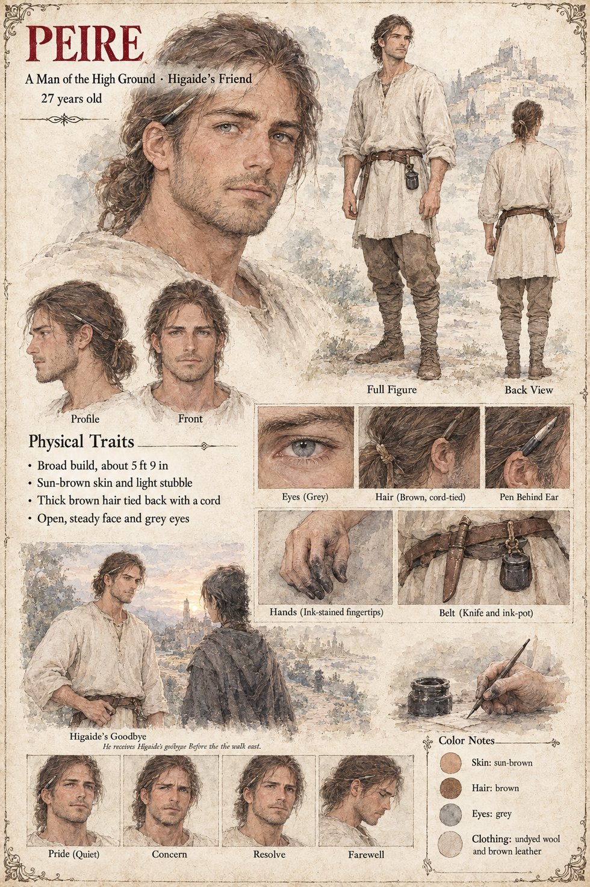

Peire
A man of the High Ground · Higaide's friend · 27 years old
A broad, sun-browned man of twenty-seven with light stubble, thick brown hair tied back with a cord, grey eyes and an open, steady face, in an undyed wool tunic and brown leather. The sheet gives him two lines, A Man of the High Ground and Higaide's Friend, and one scene, He receives Higaide's goodbye before the walk east: he stands on a hillside at dusk, with a hill-town and its tower behind him, facing a dark-cloaked figure with a braid seen from behind. It does not say what is said. The publication notes call him an Occitan man of the High Ground, Lasserra, and place the goodbye in Chapter 3.
Case 2231's Peire is the younger child of the miller's widow Ermengarda and brother to Gersenda, eight when Higaide comes out of the Stone: he watches with a switch in his hand, and at the weighing he claps a hand over his mouth to keep from laughing. Eight, and the nineteen years that the Gazetteer gives Higaide on the High Ground, the hamlet the survivors of Vilarnau built on the ridge, make twenty-seven, and that case's manuscript agrees: its Peire is twenty-seven on the morning he walks beside Higaide to the boundary-stone of the charcoal-burners' land and watches him go east. This page takes him to be that man, though the two sheets differ: this one gives grey eyes and no scar, where that one gives hazel eyes and a scar through the left eyebrow, which the manuscript says he carries from a cracked skull as a boy. The Gazetteer has Higaide leave the High Ground in the third week of Brayen, going east.
The sheet draws him with a pen behind his ear, ink-stained fingertips and an ink-pot and knife on his belt, and a small panel of a hand writing with a pen beside an ink-pot; it does not say what he writes. His expression panels run Pride (Quiet), Concern, Resolve and Farewell. Written from the sheet, from the Case 2231 pages and the Gazetteer, and from the character notes in the case's publication-prep file; the manuscript itself was not to hand. His age of 27, broad build of about 5 ft 9 in, sun-brown skin, brown hair, grey eyes and undyed wool and brown leather are the sheet's own.